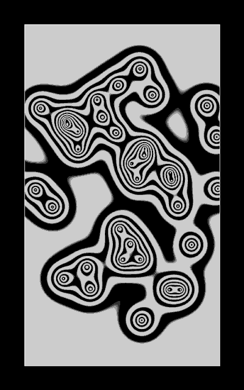

Intro, goal, examples
The following gifs use the same trick to draw some curves in Processing and I will do my best to try explaining it here. I’ll link their code and describe them at the end.
(I put them here in chronological order of creation)
Some of them look quite complex but you’ll see the maths behind them isn’t complicated, and I’ll try to explain everything slowly.
Some basic code to start with
Here is some code to generate the frames of a gif showing two disks moving in circles (one twice faster than the other one) :
int numFrames = 100;
void setup(){
size(500,500,P3D);
stroke(255);
fill(255);
}
float x1(float t){
return 0.25*width + 50*cos(TWO_PI*t);
}
float y1(float t){
return 0.5*height + 50*sin(TWO_PI*t);
}
float x2(float t){
return 0.75*width + 50*cos(2*TWO_PI*t);
}
float y2(float t){
return 0.5*height + 50*sin(2*TWO_PI*t);
}
void draw(){
float t = 1.0*(frameCount - 1)/numFrames;
background(0);
ellipse(x1(t),y1(t),6,6);
ellipse(x2(t),y2(t),6,6);
println("saving frame " + frameCount + "/" + numFrames);
if(frameCount<=numFrames) saveFrame("fr###.png");
if(frameCount == numFrames) stop();
}
Here is the result :

It might be quite a lot of code already but there won’t be much more code do draw the curves. I use P3D because it renders things more smoothly in some cases.
For all the rest of this tutorial, the disks must have any trajectory that loops well.
The lerp function
A fundamental function/thing in the curve trick is the use of the function lerp of Processing, that does linear interpolation. Skip this part if you already know it !
In case you have not heard about it, lerp(a,b,t) = (1-t)*a + t*b. when t=0 it returns a, when t=1 it returns b, when t is between 0 and 1 it returns a value between a and b linearly.
If you still don’t feel familiar with that, here is a video of Daniel Shiffman explaining it : https://www.youtube.com/watch?v=8uLVnM36XUc
I haven’t even watched it but I know he’s great at explaining stuff.
Drawing a line between two points with little points and lerp
Let’s draw lots of little transparent white points between the two disks. This trick seems useless so far but then when the curve won’t be a line, it will give cool shades of grey, that you can’t get easily with beginShape() endShape() (I think).
Added code :
int m = 1000;
(number of little points)
and :
pushStyle();
strokeWeight(2);
stroke(255,100);
for(int i=0;i<=m;i++){
float tt = 1.0*i/m;
float x = lerp(x1(t),x2(t),tt);
float y = lerp(y1(t),y2(t),tt);
point(x,y);
}
popStyle();
(inside draw())
If you understood lerp there isn't much more to understand there. I use the variable name "tt" because I want to call it "t" but it's already taken by time. Really I don't know what more to say about this code.
Link to full code
Result :

Seeing the disks with a delay
The idea is that the disk will be seen with a delay kind of proportional with the distance to the disk. Let’s begin to use this delay trick for the first disk only.
Let’s add this to the code :
This parameter :
float delay_factor = 2.0;
and :
float x = lerp(x1(t - delay_factor*tt),x2(t),tt);
float y = lerp(y1(t - delay_factor*tt),y2(t),tt);
(x1 and y1 seen with a greater delay when tt is greater, no delay when tt = 0)
Here is the result :

With delay_factor = 1.0 :
With delay_factor = 5.0 :
Seeing both disks with a delay
Now let’s have a delay on both disks.
The only change to make is :
float x = lerp(x1(t - delay_factor*tt),x2(t - delay_factor*(1-tt)),tt);
float y = lerp(y1(t - delay_factor*tt),y2(t - delay_factor*(1-tt)),tt);
You can use different delay factors if you want…
Result with delay_factor = 1.0 :

Using openSimplex noise for smooth random curves
Let’s have a perfectly looping random trajectory for the first disk. To understand this I advise to check out my previous tutorial “Drawing from noise, and then making animated loopy GIFs from there”, but you may understand anyway if you don’t have time/motivation for that.
To use openSimplex noise, put this code in another Processing tab of your sketch.
Also put this in setup() :
noise = new OpenSimplexNoise();
and define it before setup() :
OpenSimplexNoise noise;
Now we can change the code for x1() and y1() :
float motion_radius = 0.5;
float x1(float t){
float seed = 1337;
return 0.25*width + 150*(float)noise.eval(seed + motion_radius*cos(TWO_PI*t),motion_radius*sin(TWO_PI*t));
}
float y1(float t){
float seed = 1515;
return 0.5*height + 150*(float)noise.eval(seed + motion_radius*cos(TWO_PI*t),motion_radius*sin(TWO_PI*t));
}
We go through simplex noise to get horizontal and vertical values with a radius equal to motion_radius.
Result :

(where the seond disk doesn’t move to show clearly the propagation)

(where the second disk moves like before)
(where “motion_radius” has been increased)
I also actually changed some other parameters… here is the full code.
Explanation and code for more complex gifs
I’ll give a link to the code of each gif, but I warn you : it uses the motion blur system of beesandbombs (Dave Whyte), it might be experimental code with bad variable names, unecessary stuff, details that may be hard to understand, or just stupid stuff, or there might be some mistakes.
Gif 1
This gif simply uses an array of disks that have a trajectory based on simplex noise like previously, with different seeds for each disk. A curve is drawn with the trick between each disk and a point at the bottom that doesn’t move. Each disk has a method that gives the position depending on time, like array[i].x(t) makes sense.
Gif 2
Here there is an array of 10 disks that have their simplex noise trajectory centered on points forming a circle. Like previously positions (with delay) can be obtained with array[i].x(t – f*tt).
Code
(parameters are different, I haven’t found back the right ones)
Gif 3
Here it is the same thing as Gif 2, excepted that trajectories are centered differently. Also there is higher opacity and stroke weight when the disks are closer to each other. Also now the delay factor is actually proportionnal to the distance between the disks (so an almost straight curve between them is drawn when they are close). I can’t remember well why I changed the curves like that but I remember I thought I needed it. (Update : it’s because when the two points are closer with the original curve trick, the curve will just be contracted, in order to avoid that I use a smaller “delay factor” when the points are closer).
Gif 4
It is similar to the previous gif. The differences : the center of trajectories are generated randomly inside a circle, with a random angle and a random radius that has quite high probability to be close to the radius of the circle (I adjusted a probability distribution). When the center of trajectory is closer to the center of the canvas, the trajectory becomes larger (it can be so large that some disks stay far outside the circle), when it’s close to the circle it moves less.
Code
(I love the different results this one gives when you run it again)
Gif 5
The only thing to talk about here might be the trajectory of the left point, and it’s in the code.
Gif 6
The only thing really new here is the trajectory of the point in the middle. It is a simplex noise based trajectory, with an easing function to distort time.
Gif 7
Take one random moving curve generated with the tutorial trick between two disks, rotate it around the center of the canvas, add some time offset depending on the angle (and so that it loops well), and you can get this kind of gif.
I was inspired by this gif from echophon.tumblr.com.
{kind=link}
Conclusion
This was quite long for such a simple trick. I hope you understood well the trick, and that you’ll go further and come up with stuff I haven’t made yet. Thanks a lot for reading !
Things made by other people from this tutorial
Check out this codepen by Decatron where you can change the parameters like “delay factors” and see the results in real time.
Link : curve-experiment
Also check out this SketchpunkLabs video where my trick is used as a path in 3D.
Link : WebGL2 : 085 : Curved Paths
This gif by wavegrower on tumblr :

You can see he seems to have used a negative delay factor with three points üôÇ